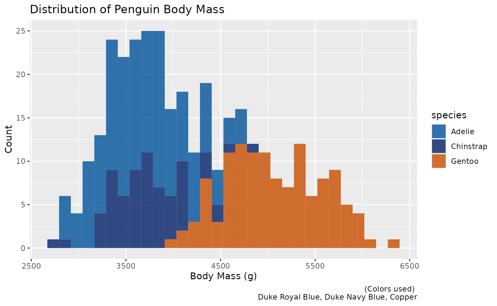

scale_duke_discrete()
Aidan Gildea
2023-02-10
Source:vignettes/scale_duke_discrete_vignette.Rmd
scale_duke_discrete_vignette.RmdThis vignette is intended to demonstrate the functionality of
scale_duke_discrete(). The function allows users to utilize
a discrete color scale of Duke official branding colors on ggplot2
visualizations. It is fully integrated with ggplot2 visualizations.
Plot Examples
For these visualization, we will use the R dummy data set
palmerpenguins.
#install.packages("palmerpenguins")
library(palmerpenguins)
library(duke)
library(ggplot2)
library(ggmosaic)
attach(penguins)Using scale_duke_discrete() on bar plots
plot <- ggplot(palmerpenguins::penguins, aes(x=species, fill = species)) +
geom_bar() +
labs(title = "Distribution of Penguin Species", caption = "(Colors from left to right) \n Duke Royal Blue, Duke Navy Blue, Copper", x = "Species", y = "Count") +
theme(legend.position = "none")
plot +
scale_duke_discrete()
Using scale_duke_discrete() on mosaic plots
plot2 <- ggplot(data = palmerpenguins::penguins) +
ggmosaic::geom_mosaic(aes(x=product(sex, island), fill = sex)) +
labs(title = "Penguin Sex vs. Island", x = "Island", y = "Penguin Sex", caption = "(Color from top to bottom) \n Granite, Duke Navy Blue, Duke Royal Blue")
plot2 +
scale_duke_discrete()
#> Warning: `unite_()` was deprecated in tidyr 1.2.0.
#> ℹ Please use `unite()` instead.
#> ℹ The deprecated feature was likely used in the ggmosaic package.
#> Please report the issue at <https://github.com/haleyjeppson/ggmosaic>.
#> New names:
#> • `colour` -> `colour...1`
#> • `colour` -> `colour...3` ## Using
## Using scale_duke_discrete() on scatter plots
plot3 <- ggplot(palmerpenguins::penguins, aes(x=bill_length_mm, y = bill_depth_mm)) +
geom_point(aes(color = species)) +
labs(title = "Bill Length vs. Bill Depth", caption = "(Colors used) \n Duke Royal Blue, Duke Navy Blue, Copper", x = "Bill Length (mm)", y = "Bill Depth (mm)")
plot3 +
scale_duke_discrete()
#> Warning: Removed 2 rows containing missing values (`geom_point()`).
#> New names:
#> • `colour` -> `colour...1`
#> • `colour` -> `colour...3` ## Using
## Using scale_duke_discrete() on histogram plots
plot4 <- ggplot2::ggplot(palmerpenguins::penguins, aes(body_mass_g)) +
geom_histogram(ggplot2::aes(fill = species), alpha = 0.8) +
labs(title = "Distribution of Penguin Body Mass", caption = "(Colors used) \n Duke Royal Blue, Duke Navy Blue, Copper", x = "Body Mass (g)", y = "Count")
plot4 + scale_duke_discrete()
#> `stat_bin()` using `bins = 30`. Pick better value with `binwidth`.
#> Warning: Removed 2 rows containing non-finite values (`stat_bin()`).
#> New names:
#> • `colour` -> `colour...1`
#> • `colour` -> `colour...3`